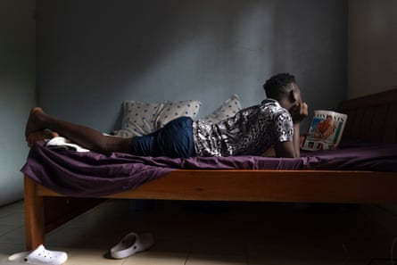
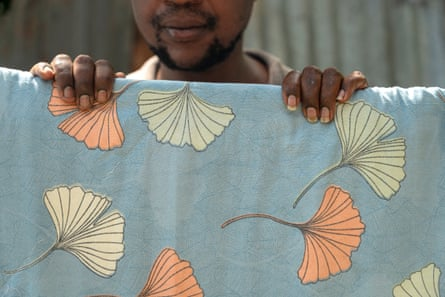
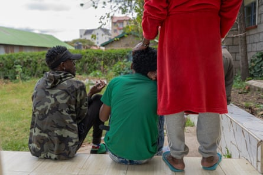
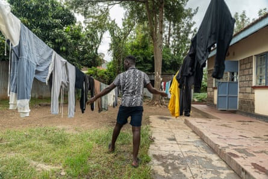
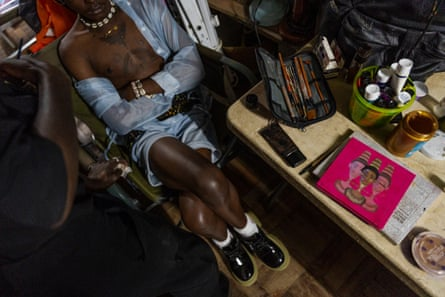

S itting on the porch of their shared house on the outskirts of Nairobi, Entity* and Rock* are chatting amiably. Aged 27 and 33 respectively, the Ugandan housemates have much in common – both exiled to Kenya for the the violence they faced at home for being gay.
In May 2023, Uganda passed the Anti-Homosexuality Act , infamously one of the world’s harshest anti-LGBTQ+ laws, including the death penalty for “aggravated homosexuality” and life imprisonment for same-sex relationships. The law harshened the 2009 “kill the gays” bill, which had come into effect in 2014 without the death penalty .
In December 2022, Entity was at a bar in Kampala when police raided it. “They took over 100 people to the central police station claiming we were using drugs – which wasn’t true,” he says.
“The officers were followed by a group of journalists who filmed us. Our faces were exposed and broadcast live on television without our consent.” Entity spent a month in detention enduring physical and psychological abuse he says, in a “hell on earth”.
One of the Ugandan members of the shelter reads a magazine in his room.Photograph: Marie Ruwet
Rock also experienced state-sponsored violence. A graduate in communications technology from Makerere University, he had a steady job in Kampala providing technical support and repairing electronics. After the law came into force, he was arrested. “I was picked up at work by the authorities and taken to jail. They beat me, abused me and tied me up with barbed wire,” he says, showing scars on his arms. After five days in custody, he and six colleagues were blindfolded and dumped out of a vehicle by the roadside.
“Since the law passed, not only has persecution intensified, but civilians also began targeting LGBTQ+ people more aggressively,” says Brian*, a 32-year-old Ugandan who has lived in Kenya since the introduction of the 2014 law. The institutional and social violence he describes was documented by Human Rights Watch in its May 2025 report , Uganda: Anti-LGBT Law Unleashed Abuse. “Because the government gave them that liberty, people felt entitled to target you, and nobody complained,” says Rock.
Entity, Rock and Brian all thought they would find safety in Kenya . “We thought this was a place where we could be ourselves. But things aren’t easy here either,” Entity says.
Just weeks after Uganda’s law was passed, Kenya emulated its neighbour with the family protection bill – spearheaded by Peter Kaluma, a Kenyan MP known for demonising homosexuality. Yvonne Wamari, senior programme officer for Africa at Outright International , says: “If passed, it will create an environment of internalised homophobia and put the population in a state of vigilance.
An LGBTQ+ refugee from Uganda hangs a blanket on a clothesline as part of the shared daily tasks at a safe shelter in Nairobi.Photograph: Marie Ruwet/AFP/Getty Images
“Laws like this create a moral panic within society that makes people feel as if they need to do something to protect their children and families,” she adds.
Such concerns are fuelled by ultraconservative groups such as Family Watch International, CitizenGO and the World Congress of Families – and is amplified at events such as the African inter-parliamentary conference on family and sovereignty , where politicians and faith leaders gathered in Uganda in May to “defend traditional values”.
An investigation by the independent international media platform Open Democracy found that US-based Christian organisations spent more than $54m between 2007 and 2018 promoting anti-LGBTQ+ and anti-abortion agendas in sub-Saharan Africa .
While both Uganda and Kenya’s bills prohibit same-sex relationships and the “promotion of homosexuality” – Kenya’s proposals go further: banning pronouns, gender reassignment and sex education.
Kenya – alongside South Africa – is currently one of only two African countries to officially recognise LGBTQ+ asylum claims . That may change if the family protection bill is passed. “It includes a morality clause for asylum seekers, which would directly affect those fleeing persecution based on their sexual orientation or gender identity,” Wamari says.
Recognition of gender-based refugee status is already difficult. “Resources that were already stretched are now being drastically reduced,” says Dana Hughes, UNHCR Kenya’s communications adviser. “This is contributing to delays in asylum processing and reducing the capacity of specialised staff to handle sensitive cases involving vulnerable groups.”
A Ugandan couple chat outside the house. They are planning to get married soon in Kenya.Photograph: Marie Ruwet
While there are no official figures on how many Ugandans are seeking asylum due to LGBTQ+ persecution, the UNHCR estimated in 2021 that there were about 1,000 LGBTQ+ refugees and asylum seekers in Kenya – primarily from Uganda . That number has probably increased since 2023. “There are more than 225,000 asylum seekers in Kenya whose refugee status has not yet been determined, including some with an LGBTIQ+ profile,” says Hughes.
Most LGBTQ+ asylum seekers from Uganda are sent to Kakuma refugee camp, a sprawling settlement of 290,000 people. A joint report by the National Gay and Lesbian Human Rights Commission and Amnesty International found Kakuma to be “an extremely dangerous place, marked by hate crimes, discrimination and other human rights violations”.
Aware of the dangers, many choose to make their own way in Nairobi where the Nature Network was formed in 2015 – an LGBTQ+ support group led by Ugandan refugees.
It has since established housing on the city’s outskirts – shelters where refugees can live in safe environments. “Here, I feel at home simply because I’m living with people who understand me,” says Entity. Around him, several portraits of queer people from around the world decorate the space near the kitchen.
The shelter in Nairobi provides a safe place for those who have fled draconian anti-LGBTQ+ laws in Uganda.Photograph: Marie Ruwet
Eight young Ugandans live there. Shelters have been raided and people evicted many times, but there is a safety in being together. “The fact that we have a roof over our heads, friends and money for food has really affected us positively,” says Rock.
In partnership with organisations such as Hoymas (Health options for young men on HIV/Aids and STIs) , the group provides activities to support mental health. “It’s simple things – talking, playing games, dancing – that help us not feel alone, to think there are people who care about my wellbeing,” says Brian, one of the Nature Network founders. “Sometimes we think we’re the only ones going through this, but during the sessions we realise we’re not. That helps us feel a sense of belonging – a sense of community.” Brian has lived in Kenya for 11 years, and had his refuge status approved six years ago.
However, life has become harder since Donald Trump’s presidency. John Mathenge, executive director of Hoymas, says: “The USAID funding cuts, specifically the termination of the Fahari ya Jamii (Pride of the Community) project, have had a devastating impact.
“It accounted for more than 50% of our budget, supporting HIV care, STI services, salaries, outreach and mental health programming for key populations, including LGBTQ+ individuals and sex workers.”
The $32m (£23m) project, which supported 72,000 people with antiretrovirals across more than 150 clinics in Kenya, was suspended in February .
A queer model has their makeup done ahead of a fashion show held as part of a series of balls in Nairobi.Photograph: Marie Ruwet/AFP/Getty Images
It has made culture and community more essential. About 20km from the shelter, a series of balls are planned. With dancing, runway fashion walks and performances, they have become places of expression and visibility. But most who attend come from privileged backgrounds while financial barriers and stigma keep others away. “They’re well known figures in the creative scene – musicians, fashion designers, singers, dancers,” says Andeti, 26, founder of the Haus of Andeti – “a safe space of liberation and resistance for those who just want to feel free and accepted”.
“Making the space truly inclusive remains a challenge,” he adds. “Those most hesitant and scared to attend are usually from countries where homosexuality is punished even more harshly than in Kenya.”
* Names have been changed